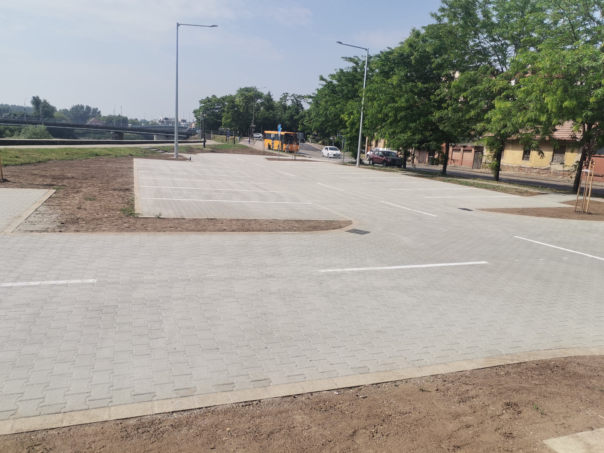
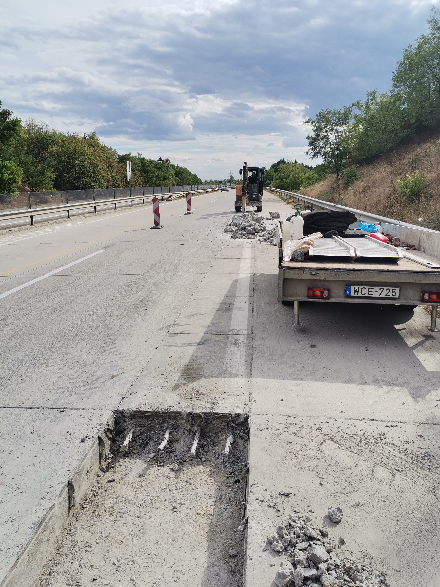
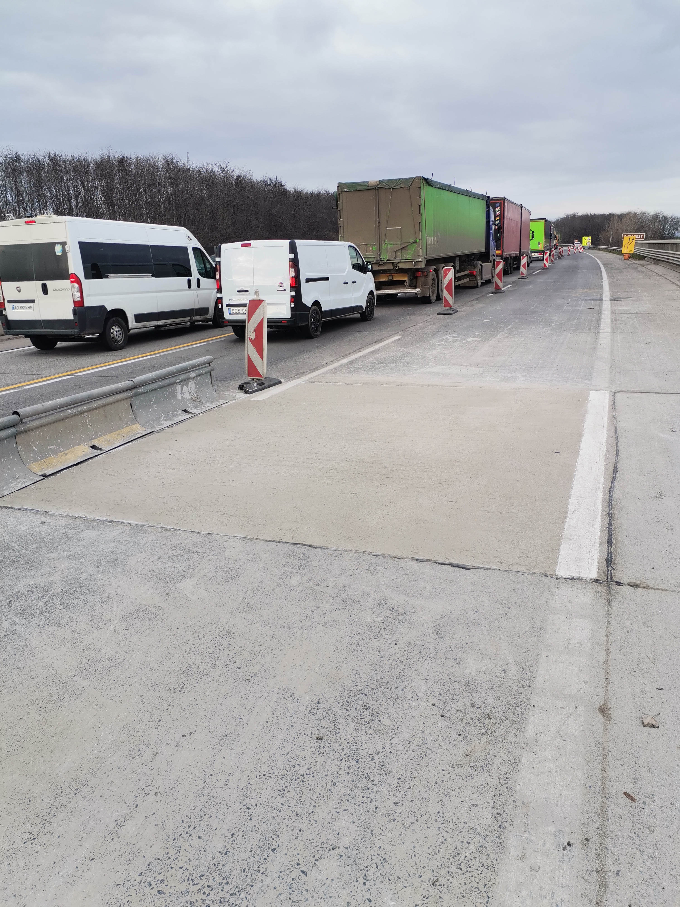
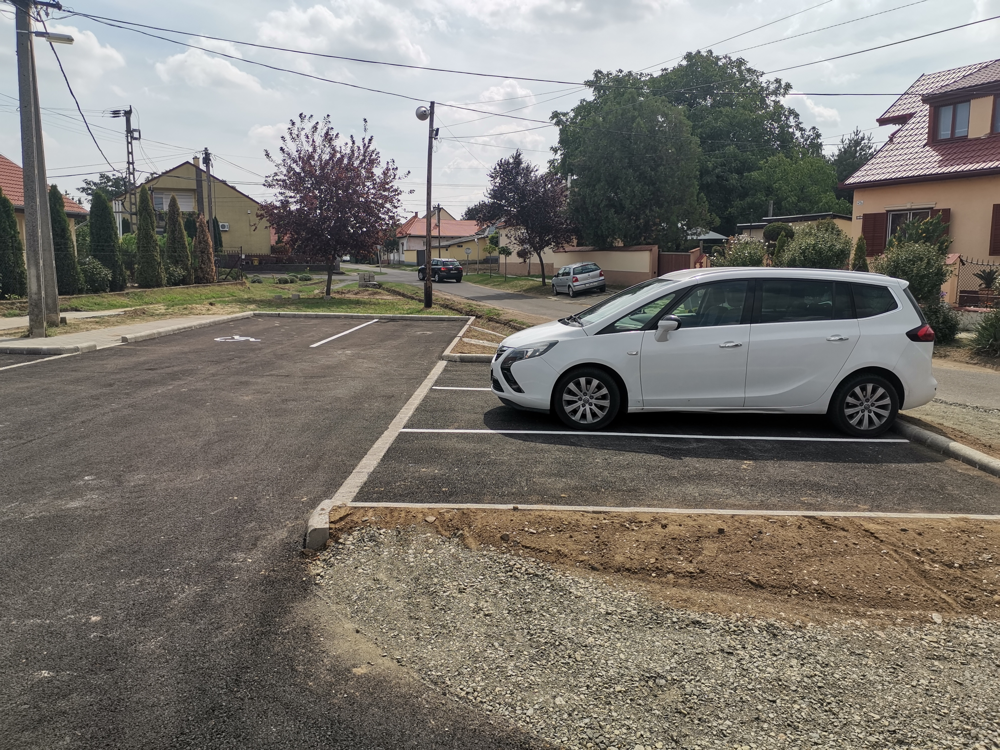
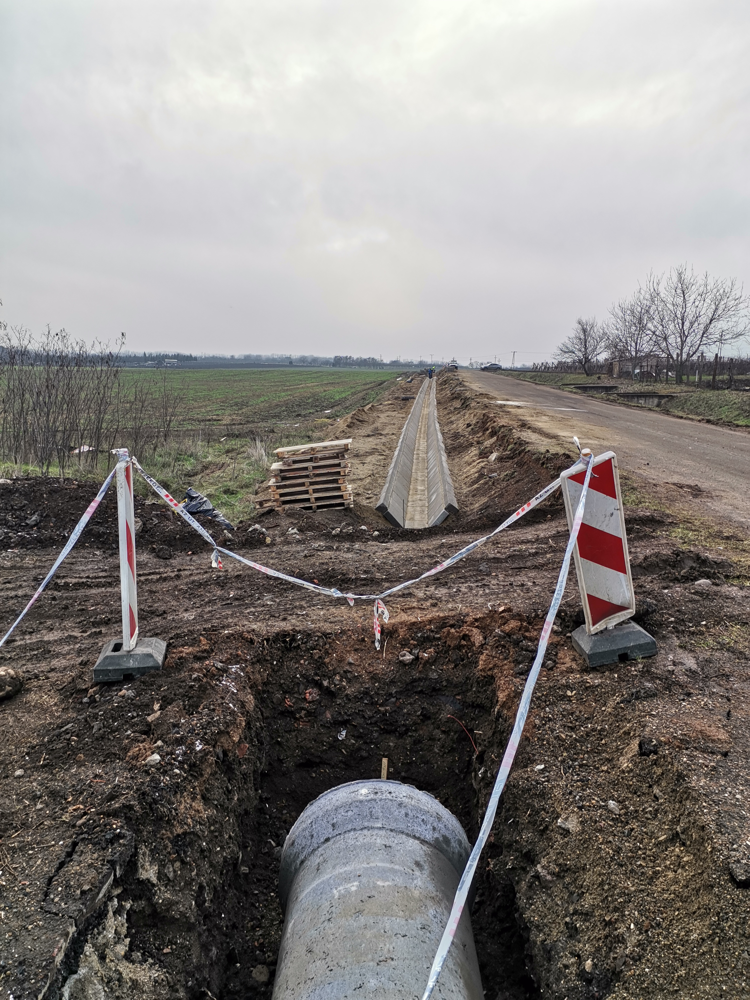

|
Agria Útvonal Kft. 3300 Eger, Dr. Kapor Elemér u. 20. Mobil: +36-70/347-3051 |
|---|---|
 |
|
|  | Tárgy: Szolnok, Várkerület fejlesztéséhez kapcsolódó turista parkoló kivitelezése Megrendelő: AQUA-GENERÁL KFT. |
|---|---|
 |
Tárgy: 32111 jelű Pélyi bekötő út 17+384 - 20+400 km sz. közötti szakasz burkolat felújítási munkái Megrendelő: COLAS ÚT ZRT. |
|  | Tárgy: M31 autópálya jobb és baloldali pályarészein bazaltbeton pályaszerkezet javítási munkái Megrendelő: MAGYAR KÖZÚT NZRT. Heves Megyei Igazgatóság |
 |
Tárgy: Érv Zrt. működési területén útfelbontások helyreállítási munkái Megrendelő: KARANCS KÖZMŰ KFT. |
|  | Tárgy: M0-M31 autópálya jobb és baloldali pályarészein bazaltbeton pályaszerkezet javítási munkái Megrendelő: MAGYAR KÖZÚT NZRT. Heves Megyei Igazgatóság |
|  | Tárgy: Verpelét, Árpád út HRSZ 335, 345/1 út és parkoló építése Megrendelő: VERPELÉT VÁROS ÖNKORMÁNYZATA |
|  | Tárgy: Gyöngyös nyugati elkerülő út I. ütem 0+000-2+986 km sz. közötti szakasz vízépítési munkái Megrendelő: HE-DO KFT. - COLAS ÚT ZRT. konzorcium |
MÉRNÖKI TEVÉKENYSÉGEK, ÉPÍTŐIPARI FŐVÁLLALKOZÁS, GENERÁLKIVITELEZÉS, MÉLYÉPÍTÉS, MAGASÉPÍTÉS